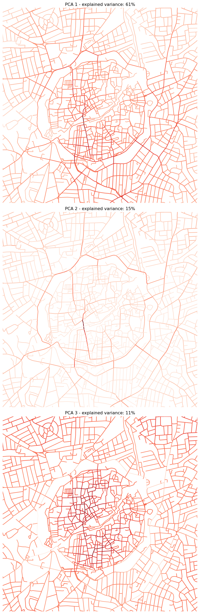
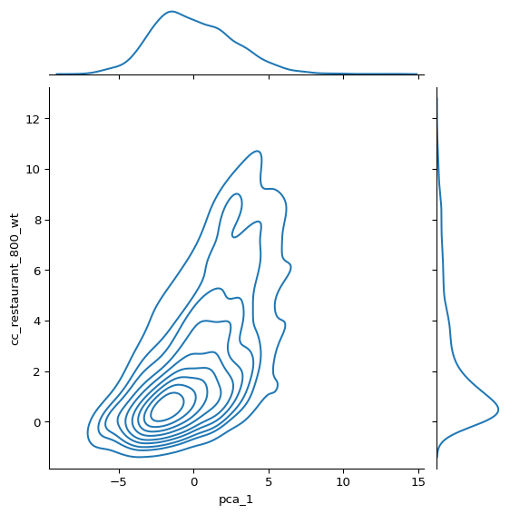

import matplotlib.pyplot as plt
import osmnx as ox
from cityseer.metrics import layers, networks
from cityseer.tools import graphs, io, plotData Science
Data science encompasses a wide array of methods to extract insights and knowledge from data. Broadly, these methods can be categorised:
- Exploratory Data Analysis: This involves examining datasets to summarise their main characteristics, often with visual methods. It’s a first step to understand data distributions, relationships between variables, and to identify anomalies or patterns.
- Unsupervised Learning: This type of machine learning aims to find hidden patterns or intrinsic structures in input data without pre-existing labels.
- Dimensionality Reduction: Simplifies complex datasets by reducing the number of variables (features) while preserving underlying information.
- Clustering: Groups data points based on their similarity, helping to identify distinct segments or typologies within the data.
- Supervised Learning: This involves training a model on a labelled dataset, where the desired output is already known. The goal is to predict the output for new, unseen data. Regression (predicting continuous values) and classification (predicting discrete categories) are common supervised tasks.
This notebook will briefly demonstrate an example of dimensionality reduction using PCA to understand latent structures in street network centrality measures, and an example of supervised learning using a Random Forest Regressor to predict restaurant accessibility. This is a high-level introduction, and you are encouraged to explore these powerful techniques further.
First, we import the necessary Python packages.
First, we define the geographical area of interest (Nicosia, Cyprus) using longitude and latitude coordinates, and a buffer radius. Then, we use cityseer to:
- Create a buffered polygon area around the center point.
- Download and simplify the street network within this polygon from OpenStreetMap.
- Convert the primal graph (intersections and streets) to its dual representation (streets as nodes, intersections as edges) so that calculations can be expressed relative to streets.
- Extract the network structure (nodes and edges) into GeoDataFrames.
- Calculate various node centrality measures (network density, harmonic closeness, betweenness) at different distances (500m, 1000m, 2000m, 5000m) using angular analysis (considering turning angles). These measures help quantify the importance or connectivity of each node within the network.
To learn more about these methods, look at the Cityseer Recipes section.
lng, lat = 33.36402, 35.17526
buffer = 2000
poly_wgs, epsg_code = io.buffered_point_poly(lng, lat, buffer)
G = io.osm_graph_from_poly(poly_wgs, to_crs_code=3035)
G_dual = graphs.nx_to_dual(G)
nodes_gdf, _edges_gdf, network_structure = io.network_structure_from_nx(
G_dual,
)
nodes_gdf = networks.node_centrality_simplest(
network_structure=network_structure,
nodes_gdf=nodes_gdf,
distances=[500, 1000, 2000, 5000],
)
nodes_gdf.head()INFO:cityseer.tools.graphs:Generating interpolated edge geometries.
INFO:cityseer.tools.io:Converting networkX graph to CRS code 3035.
INFO:cityseer.tools.io:Processing node x, y coordinates.
INFO:cityseer.tools.io:Processing edge geom coordinates, if present.
INFO:cityseer.tools.graphs:Removing filler nodes.
INFO:cityseer.tools.util:Creating edges STR tree.
INFO:cityseer.tools.graphs:Removing filler nodes.
INFO:cityseer.tools.graphs:Removing dangling nodes.
INFO:cityseer.tools.graphs:Removing filler nodes.
INFO:cityseer.tools.util:Creating edges STR tree.
INFO:cityseer.tools.graphs:Splitting opposing edges.
INFO:cityseer.tools.graphs:Squashing opposing nodes
INFO:cityseer.tools.graphs:Merging parallel edges within buffer of 25.
INFO:cityseer.tools.util:Creating edges STR tree.
INFO:cityseer.tools.graphs:Splitting opposing edges.
INFO:cityseer.tools.graphs:Squashing opposing nodes
INFO:cityseer.tools.graphs:Merging parallel edges within buffer of 25.
INFO:cityseer.tools.util:Creating edges STR tree.
INFO:cityseer.tools.graphs:Splitting opposing edges.
INFO:cityseer.tools.graphs:Squashing opposing nodes
INFO:cityseer.tools.graphs:Merging parallel edges within buffer of 25.
INFO:cityseer.tools.util:Creating edges STR tree.
INFO:cityseer.tools.graphs:Splitting opposing edges.
INFO:cityseer.tools.graphs:Squashing opposing nodes
INFO:cityseer.tools.graphs:Merging parallel edges within buffer of 25.
INFO:cityseer.tools.util:Creating nodes STR tree
INFO:cityseer.tools.graphs:Consolidating nodes.
INFO:cityseer.tools.graphs:Merging parallel edges within buffer of 25.
INFO:cityseer.tools.graphs:Removing filler nodes.
INFO:cityseer.tools.util:Creating nodes STR tree
INFO:cityseer.tools.graphs:Consolidating nodes.
INFO:cityseer.tools.graphs:Merging parallel edges within buffer of 25.
INFO:cityseer.tools.graphs:Removing filler nodes.
INFO:cityseer.tools.util:Creating nodes STR tree
INFO:cityseer.tools.graphs:Consolidating nodes.
INFO:cityseer.tools.graphs:Merging parallel edges within buffer of 25.
INFO:cityseer.tools.graphs:Removing filler nodes.
INFO:cityseer.tools.util:Creating nodes STR tree
INFO:cityseer.tools.graphs:Consolidating nodes.
INFO:cityseer.tools.graphs:Merging parallel edges within buffer of 25.
INFO:cityseer.tools.graphs:Removing filler nodes.
INFO:cityseer.tools.util:Creating nodes STR tree
INFO:cityseer.tools.util:Creating edges STR tree.
INFO:cityseer.tools.graphs:Snapping gapped endings.
INFO:cityseer.tools.util:Creating edges STR tree.
INFO:cityseer.tools.graphs:Splitting opposing edges.
INFO:cityseer.tools.graphs:Merging parallel edges within buffer of 25.
INFO:cityseer.tools.graphs:Removing dangling nodes.
INFO:cityseer.tools.graphs:Removing filler nodes.
INFO:cityseer.tools.util:Creating edges STR tree.
INFO:cityseer.tools.graphs:Splitting opposing edges.
INFO:cityseer.tools.graphs:Squashing opposing nodes
INFO:cityseer.tools.graphs:Merging parallel edges within buffer of 25.
INFO:cityseer.tools.util:Creating nodes STR tree
INFO:cityseer.tools.graphs:Consolidating nodes.
INFO:cityseer.tools.graphs:Merging parallel edges within buffer of 25.
INFO:cityseer.tools.util:Creating edges STR tree.
INFO:cityseer.tools.graphs:Splitting opposing edges.
INFO:cityseer.tools.graphs:Squashing opposing nodes
INFO:cityseer.tools.graphs:Merging parallel edges within buffer of 25.
INFO:cityseer.tools.util:Creating nodes STR tree
INFO:cityseer.tools.graphs:Consolidating nodes.
INFO:cityseer.tools.graphs:Merging parallel edges within buffer of 25.
INFO:cityseer.tools.graphs:Removing filler nodes.
INFO:cityseer.tools.graphs:Merging parallel edges within buffer of 50.
INFO:cityseer.tools.graphs:Ironing edges.
INFO:cityseer.tools.graphs:Merging parallel edges within buffer of 1.
INFO:cityseer.tools.graphs:Removing dangling nodes.
INFO:cityseer.tools.graphs:Removing filler nodes.
INFO:cityseer.tools.graphs:Converting graph to dual.
INFO:cityseer.tools.graphs:Preparing dual nodes
INFO:cityseer.tools.graphs:Preparing dual edges (splitting and welding geoms)
INFO:cityseer.tools.io:Preparing node and edge arrays from networkX graph.
INFO:cityseer.graph:Edge R-tree built successfully with 8261 items.
INFO:cityseer.metrics.networks:Computing simplest path node centrality.
INFO:cityseer.config:Metrics computed for:
INFO:cityseer.config:Distance: 500m, Beta: 0.008, Walking Time: 6.25 minutes.
INFO:cityseer.config:Distance: 1000m, Beta: 0.004, Walking Time: 12.5 minutes.
INFO:cityseer.config:Distance: 2000m, Beta: 0.002, Walking Time: 25.0 minutes.
INFO:cityseer.config:Distance: 5000m, Beta: 0.0008, Walking Time: 62.5 minutes.| ns_node_idx | x | y | live | weight | primal_edge | primal_edge_node_a | primal_edge_node_b | primal_edge_idx | dual_node | ... | cc_hillier_2000_ang | cc_hillier_5000_ang | cc_farness_500_ang | cc_farness_1000_ang | cc_farness_2000_ang | cc_farness_5000_ang | cc_betweenness_500_ang | cc_betweenness_1000_ang | cc_betweenness_2000_ang | cc_betweenness_5000_ang | |
|---|---|---|---|---|---|---|---|---|---|---|---|---|---|---|---|---|---|---|---|---|---|
| 48726322_48726455_k0 | 0 | 6.433811e+06 | 1.668938e+06 | True | 1 | LINESTRING (6433846.36 1669056.022, 6433841.38... | 48726322 | 48726455 | 0 | POINT (6433811.251957 1668937.860386) | ... | 82.064583 | 282.401154 | 69.122574 | 684.074768 | 3889.924072 | 43576.535156 | 0.0 | 0.0 | 0.0 | 0.0 |
| 12726|58326±94915|35720_1946128965_k0 | 1 | 6.433905e+06 | 1.668819e+06 | True | 1 | LINESTRING (6434031.721 1668984.642, 6434023.1... | 1946128965 | 12726|58326±94915|35720 | 0 | POINT (6433905.232527 1668818.937382) | ... | 108.170525 | 334.010040 | 115.184326 | 728.558533 | 2816.885742 | 38371.300781 | 0.0 | 0.0 | 0.0 | 0.0 |
| 12726|58326±94915|35720_9491513922_k0 | 2 | 6.433850e+06 | 1.668726e+06 | True | 1 | LINESTRING (6434031.721 1668984.642, 6434026.0... | 9491513922 | 12726|58326±94915|35720 | 0 | POINT (6433850.491637 1668725.511627) | ... | 101.548767 | 331.368347 | 35.281052 | 596.484436 | 2442.215820 | 37604.375000 | 0.0 | 0.0 | 0.0 | 0.0 |
| 33755185_5125635691_k0 | 3 | 6.433199e+06 | 1.669437e+06 | True | 1 | LINESTRING (6433477.844 1669569.725, 6433441.0... | 5125635691 | 33755185 | 0 | POINT (6433199.422437 1669436.611537) | ... | 85.127052 | 336.121613 | 35.293468 | 358.534912 | 2052.508545 | 36278.726562 | 0.0 | 0.0 | 0.0 | 0.0 |
| 48726544_5125635684_k0 | 4 | 6.433514e+06 | 1.669124e+06 | True | 1 | LINESTRING (6433584.449 1669178.412, 6433502.0... | 48726544 | 5125635684 | 0 | POINT (6433513.812668 1669124.248801) | ... | 94.936378 | 324.996216 | 87.679543 | 579.539551 | 2248.284668 | 38428.621094 | 0.0 | 0.0 | 0.0 | 0.0 |
5 rows × 30 columns
Next, we use osmnx to acquire data about restaurants within the previously defined polygonal area (poly_wgs).
ox.features_from_polygonqueries OpenStreetMap for features tagged with"amenity": "restaurant"..to_crs(epsg=3035)reprojects the downloaded restaurant data to the ETRS89 / LAEA Europe projected coordinate system (EPSG:3035) to ensure consistency with the street network data and enable accurate spatial calculations.gdf_rest[["amenity", "geometry"]]filters out theamenityandgeometrycolumns..reset_index(drop=True)resets the DataFrame index for cleaner data handling.
gdf_rest = ox.features_from_polygon(poly_wgs, tags={"amenity": "restaurant"})
gdf_rest = gdf_rest.to_crs(epsg=3035)
gdf_rest = gdf_rest[["amenity", "geometry"]]
gdf_rest = gdf_rest.reset_index(drop=True)
gdf_rest.head()| amenity | geometry | |
|---|---|---|
| 0 | restaurant | POINT (6433704.816 1670134.568) |
| 1 | restaurant | POINT (6433708.714 1669375.407) |
| 2 | restaurant | POINT (6433986.532 1669950.98) |
| 3 | restaurant | POINT (6434080.329 1669986.277) |
| 4 | restaurant | POINT (6435265.366 1669515.579) |
We can then use cityseer once again to calculate accessibility to restaurants from each node in the street network.
layers.compute_accessibilitiesis a function that takes the restaurant locations (gdf_rest) and the street network nodes (nodes_gdf) as input.landuse_column_label="amenity"specifies that the ‘amenity’ column ingdf_restidentifies the type of feature (restaurants in this case).accessibility_keys=["restaurant"]tells the function to calculate accessibility specifically for features labellieed as ‘restaurant’.network_structureprovides the pre-calculated network graph and its properties.distances=[200, 400, 800]specifies the distance thresholds (in meters) at which accessibility should be measured. For each node, this will count how many restaurants are reachable within 200m, 400m, and 800m along the network.
The function updates nodes_gdf by adding new columns representing these accessibility scores (e.g., cc_restaurant_200_wt - weighted count of restaurants within 200m, cc_restaurant_200_nw - raw count of restaurants within 200m, etc.).
nodes_gdf, gdf_rest = layers.compute_accessibilities(
gdf_rest,
landuse_column_label="amenity",
accessibility_keys=["restaurant"],
nodes_gdf=nodes_gdf,
network_structure=network_structure,
distances=[200, 400, 800],
)INFO:cityseer.metrics.layers:Computing land-use accessibility for: restaurant
INFO:cityseer.metrics.layers:Assigning data to network.
INFO:cityseer.data:Assigning 184 data entries to network nodes (max_dist: 100).
INFO:cityseer.data:Finished assigning data. 410 assignments added to 329 nodes.
INFO:cityseer.config:Metrics computed for:
INFO:cityseer.config:Distance: 200m, Beta: 0.02, Walking Time: 2.5 minutes.
INFO:cityseer.config:Distance: 400m, Beta: 0.01, Walking Time: 5.0 minutes.
INFO:cityseer.config:Distance: 800m, Beta: 0.005, Walking Time: 10.0 minutes.We now arrive at the Data Science section, which performs Principal Component Analysis (PCA), a dimensionality reduction technique, on the street network centrality measures. The goal is to identify underlying patterns or latent dimensions within these (often correlated) centrality metrics.
StandardScaler()is initialised to standardise the data. PCA is sensitive to the scale of variables, so standardisation (transforming data to have zero mean and unit variance) is a necessary preprocessing step.X_scaled = scaler.fit_transform(...)selects the twelve centrality columns (density, harmonic, and betweenness at four different distances) fromnodes_gdfand applies the standardisation.pca = PCA(n_components=4)initialises PCA to extract the top 4 principal components. These components are new, uncorrelated variables that capture the maximum possible variance from the original data.X_pca = pca.fit_transform(X_scaled)applies PCA to the scaled centrality data.- The next four lines add these four principal components as new columns (
pca_1,pca_2,pca_3,pca_4) to thenodes_gdfGeoDataFrame. - The subsequent code sets up a 3x1 plot to visualise the spatial distribution of the first three principal components. Each subplot shows the nodes coloured by their score on a principal component. The title of each subplot indicates the percentage of the original data’s variance that is explained by that component. This helps in understanding how much information is retained by each component.
from sklearn.decomposition import PCA
from sklearn.preprocessing import StandardScaler
# Standardise the data
scaler = StandardScaler()
X_scaled = scaler.fit_transform(
nodes_gdf[
[
"cc_density_500_ang",
"cc_density_1000_ang",
"cc_density_2000_ang",
"cc_density_5000_ang",
"cc_harmonic_500_ang",
"cc_harmonic_1000_ang",
"cc_harmonic_2000_ang",
"cc_harmonic_5000_ang",
"cc_betweenness_500_ang",
"cc_betweenness_1000_ang",
"cc_betweenness_2000_ang",
"cc_betweenness_5000_ang",
]
]
)
# Perform PCA
pca = PCA(n_components=4)
X_pca = pca.fit_transform(X_scaled)
# Add PCA components to the DataFrame
nodes_gdf["pca_1"] = X_pca[:, 0]
nodes_gdf["pca_2"] = X_pca[:, 1]
nodes_gdf["pca_3"] = X_pca[:, 2]
nodes_gdf["pca_4"] = X_pca[:, 3]
# plot explained variance
fig, ax = plt.subplots(3, 1, figsize=(8, 24))
nodes_gdf.plot(
column="pca_1",
cmap="Reds",
legend=False,
ax=ax[0],
)
ax[0].set_xlim(6433800, 6433800 + 2700)
ax[0].set_ylim(1669400, 1669400 + 2700)
ax[0].axis(False)
ax[0].set_title(
"PCA 1 - explained variance: {:.0%}".format(pca.explained_variance_ratio_[0])
)
nodes_gdf.plot(
column="pca_2",
cmap="Reds",
legend=False,
ax=ax[1],
)
ax[1].set_xlim(6433800, 6433800 + 2700)
ax[1].set_ylim(1669400, 1669400 + 2700)
ax[1].axis(False)
ax[1].set_title(
"PCA 2 - explained variance: {:.0%}".format(pca.explained_variance_ratio_[1])
)
nodes_gdf.plot(
column="pca_3",
cmap="Reds",
legend=False,
ax=ax[2],
)
ax[2].set_xlim(6433800, 6433800 + 2700)
ax[2].set_ylim(1669400, 1669400 + 2700)
ax[2].axis(False)
ax[2].set_title(
"PCA 3 - explained variance: {:.0%}".format(pca.explained_variance_ratio_[2])
)
plt.tight_layout()
The next cell uses seaborn, a statistical data visualisation library, to create a histogram and a joint plot.
Histograms are useful for visualising the distribution of a single variable, while joint plots allow for the visualisation of the relationship between two variables along with their individual distributions.
The histogram shows the distribution of restaurant accessibility within 800 meters (cc_restaurant_800_wt). The x-axis represents the accessibility values, while the y-axis shows the frequency of these values. The bins=50 argument specifies that the data should be divided into 50 bins for the histogram.
The joint plot visualises the relationship between the first principal component (pca_1) and restaurant accessibility within 800 meters (cc_restaurant_800_wt).
import seaborn as sns
sns.histplot(
data=nodes_gdf,
x="cc_restaurant_800_wt",
bins=50,
)
sns.jointplot(
data=nodes_gdf,
x="pca_1",
y="cc_restaurant_800_wt",
kind="kde",
)

This cell demonstrates use of a Random Forest Regressor model to predict restaurant accessibility (cc_restaurant_800_wt) based on the four principal components (pca_1 to pca_4) derived from the network centrality measures. This is an example of supervised learning.
Xis defined as the DataFrame containing the predictor variables (the four PCA components).yis defined as the target variable (restaurant accessibility at 800m).train_test_split(X, y, ...)splits the data into training (80%) and testing (20%) sets. The model will be trained on the training set and evaluated on the unseen testing set.random_state=42ensures reproducibility of the split.regressor = RandomForestRegressor(...)initialises a Random Forest Regressor model.n_estimators=100means it will use 100 decision trees.criterion="squared_error"specifies the function to measure the quality of a split.regressor.fit(X_train, y_train)trains the model using the training data.y_pred = regressor.predict(X_test)makes predictions on the test set.r2 = r2_score(y_test, y_pred)calculates the R-squared score, a measure of how well the model’s predictions fit the actual values in the test set. An R2 score closer to 1 indicates a better fit. Increasing the size of the training set generally improves the model’s performance, as it has more data to learn from.- The model then predicts accessibility for all nodes using
regressor.predict(X)and stores these predictions in a new columncc_restaurant_800_wt_pred. nodes_gdf["cc_restaurant_800_residuals"]calculates the residuals (the difference between predicted and actual accessibility values).- The final part of the cell sets up a 3x1 plot to visualise:
- The actual restaurant accessibility.
- The predicted restaurant accessibility (with the R2 score in the title).
- The residuals of the regression, showing where the model over or under-predicts accessibility. A good model would have residuals randomly scattered around zero.
from sklearn.ensemble import RandomForestRegressor
from sklearn.metrics import r2_score
from sklearn.model_selection import train_test_split
X = nodes_gdf[["pca_1", "pca_2", "pca_3", "pca_4"]]
y = nodes_gdf["cc_restaurant_800_wt"]
X_train, X_test, y_train, y_test = train_test_split(
X, y, test_size=0.2, random_state=42
)
regressor = RandomForestRegressor(
n_estimators=100, random_state=42, criterion="squared_error"
)
regressor.fit(X_train, y_train)
y_pred = regressor.predict(X_test)
# R2 score
r2 = r2_score(y_test, y_pred)
print("R2 score: ", r2)
# plot residuals
nodes_gdf["cc_restaurant_800_wt_pred"] = regressor.predict(X)
nodes_gdf["cc_restaurant_800_residuals"] = (
nodes_gdf["cc_restaurant_800_wt_pred"] - nodes_gdf["cc_restaurant_800_wt"]
)
fig, ax = plt.subplots(3, 1, figsize=(8, 24))
nodes_gdf.plot(
column="cc_restaurant_800_wt",
cmap="magma",
legend=True,
ax=ax[0],
)
ax[0].set_xlim(6433800, 6433800 + 2700)
ax[0].set_ylim(1669400, 1669400 + 2700)
ax[0].axis(False)
ax[0].set_title("Restaurant Accessibility")
nodes_gdf.plot(
column="cc_restaurant_800_wt_pred",
cmap="magma",
legend=True,
ax=ax[1],
)
ax[1].set_xlim(6433800, 6433800 + 2700)
ax[1].set_ylim(1669400, 1669400 + 2700)
ax[1].axis(False)
ax[1].set_title("Predicted Restaurant Accessibility - R2 score: {:.2f}".format(r2))
nodes_gdf.plot(
column="cc_restaurant_800_residuals",
cmap="coolwarm",
vmax=4,
vmin=-4,
legend=True,
ax=ax[2],
)
ax[2].set_xlim(6433800, 6433800 + 2700)
ax[2].set_ylim(1669400, 1669400 + 2700)
ax[2].axis(False)
ax[2].set_title("Residuals of Random Forest Regression")
plt.tight_layout()R2 score: 0.7482196529910629